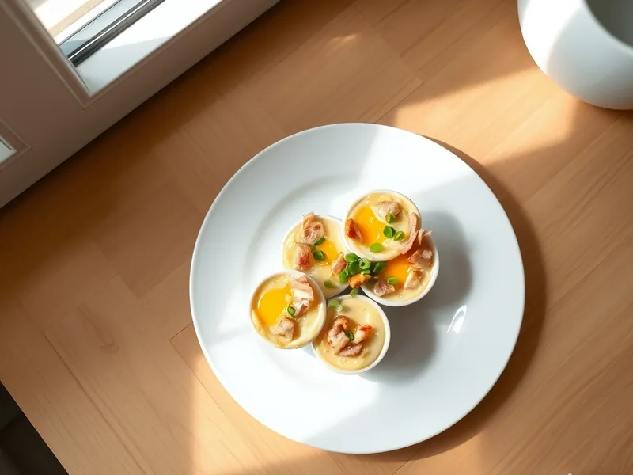

Яйца кокот с ветчиной и сливками
Яйца, запечённые в формочках на сливках с ветчиной и сыром
25 мин2 порц.440 ккал на порциюБ 25 · Ж 37 · У 3Европейская кухня
Открыть в приложении: порции, таймеры, список покупок
Продукты на 2 порц.
- Яйцо куриное4 шт
- Сливки 20%80 мл
- Ветчина60 г
- Сыр твёрдый40 г
- Сливочное масло10 г
- Соль1 щеп.
- Перец чёрный молотыйпо вкусу
- Зелёный лук по желаниюпо вкусу
Как готовить
- Разогрейте духовку до 180 °C (средний жар). Вскипятите чайник.
- Смажьте 4 керамические формочки сливочным маслом, на дно положите мелко нарезанную ветчину и влейте по 1 ст. л. сливок.
- Аккуратно разбейте в каждую формочку по яйцу, сверху полейте оставшимися сливками, посолите, поперчите и посыпьте тёртым сыром.
- Поставьте формочки в глубокий противень и налейте кипяток до половины высоты формочек.
- Запекайте 12-15 минут, пока белок не станет матовым и плотным, а желток останется дрожащим.
- Посыпьте зелёным луком и подавайте сразу, прямо в формочках.
Совет. Водяная баня не даёт белку стать резиновым: без неё края пересыхают раньше, чем схватится середина.